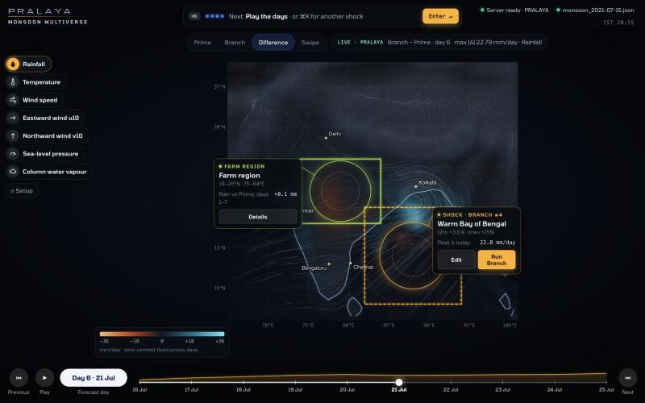

353 windows, shipped checkpoint, kit scoring functions (monsoon_r1.scoring). Skill = 1 − RMSE / min(RMSE persistence, RMSE climatology), latitude-weighted, mean of 6 channels per window; 95% block-bootstrap CIs. These are local proxies, not leaderboard scores; the grader uses 5 hidden 2023–24 windows.
| Metric | Day 1 | Day 4 | Day 8 |
|---|---|---|---|
| Skill vs better baseline | +0.238 | +0.004 | −0.112 |
| Skill vs persistence only | — | +0.222 | — |
| Heavy-rain CSI (>10 mm/day, pooled): model | 0.530 | 0.332 | 0.289 |
| persistence / climatology | 0.426 / 0.260 | 0.209 / 0.261 | 0.196 / 0.262 |
| Check | Result (2021) |
|---|---|
| Beats persistence at day 4 (qualification gate) | +0.222 [0.203, 0.244]; 95% of windows |
| Heavy-rain CSI skill (per window) | +0.081 [0.065, 0.102] |
| Invalid windows (NaN, rain < 0, t2m range) | 0 of 353 |
| Shock: localized near box on day 1 | 100% of windows, both shocks |
| Shock: spreads outward by days 4–8 | warm Bay 94% · Arabian Sea wind 62% |
| Shock: stable (< 5 std everywhere) | warm Bay 86% · Arabian Sea wind 95% |
| Zero shock | bit-identical to no shock |
Clean checkout of 385e70f: official schema validator 6/6 and repo scan 15/15 with zero flags. Under offline ARM64 limits (4 CPU, 6 GiB, read-only repo), eight ten-step calls took 122–209 ms and peak container memory was 245 MiB. Native x86 latency remains unverified.

For a user-drawn farm region (land cells with land fraction ≥ 0.5) over chosen forecast days, computed identically for Prime and Branch:
Window ending 15 Jul 2021 (test year, never used for training or selection). Shock: organizer warm Bay of Bengal recipe. Farm region: central India, 18.5–25.5°N, 74.5–83.5°E, 80 land cells, days 1–7. We recomputed every value below from the raw rollouts outside the dashboard; all match.
| Indicator | Prime | Branch | Branch − Prime |
|---|---|---|---|
| Cumulative rainfall | 66.1 mm | 66.2 mm | +0.1 mm |
| Longest dry spell | 2 d | 1 d | −1 d |
| Dry days (< 2.5 mm/day) | 2 | 1 | −1 |
| Heavy-rain exposure (≥ 10 mm/day) | 46.8% | 48.4% | +1.6 pp |
| Mean 2 m temperature | 28.6 °C | 28.7 °C | +0.18 K |
Reading: a warmer, moister Bay of Bengal leaves central India's week-ahead totals almost unchanged but shortens the longest dry spell and slightly raises heavy-rain exposure. The rainfall response starts in the Bay (6% of cells outside the box change on day 1; peak 8.6 mm/day) and spreads to the coast and inland by day 6.
The Scenarios tab searches signed shocks for a rainfall deficit or an absolute threshold. It shows the lowest-cost qualifying shock, cumulative rainfall spread across the tested scenarios, and water shortfall under user-set daily supplements. Replay as Branch checks the full returned forecast.
On the window ending 30 Jun 2020, a +1.5 K Bay of Bengal shock raised Odisha’s seven-day rainfall from 105.64 to 115.12 mm, crossing 115 mm. The dashboard flags this magnitude outside the recommended range. The rollout matched on replay.